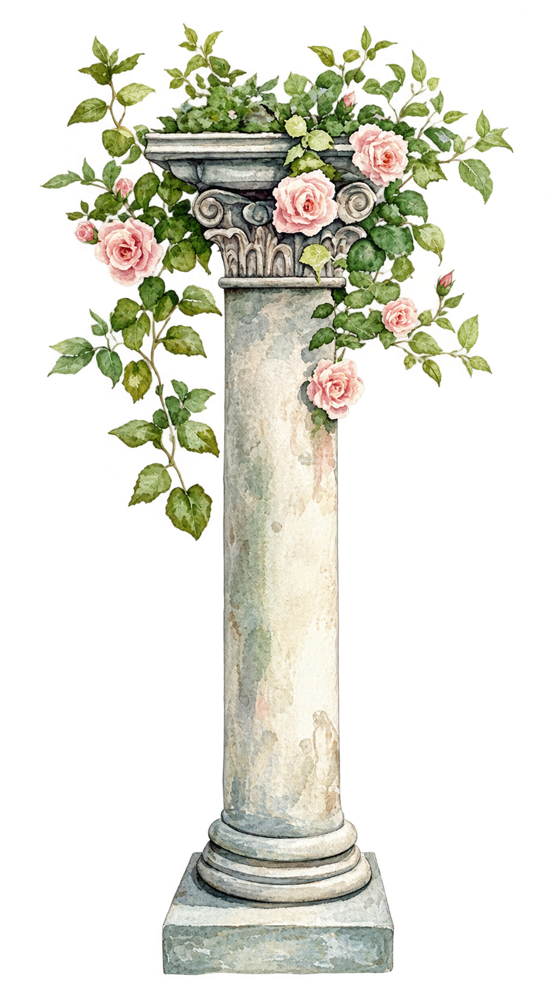
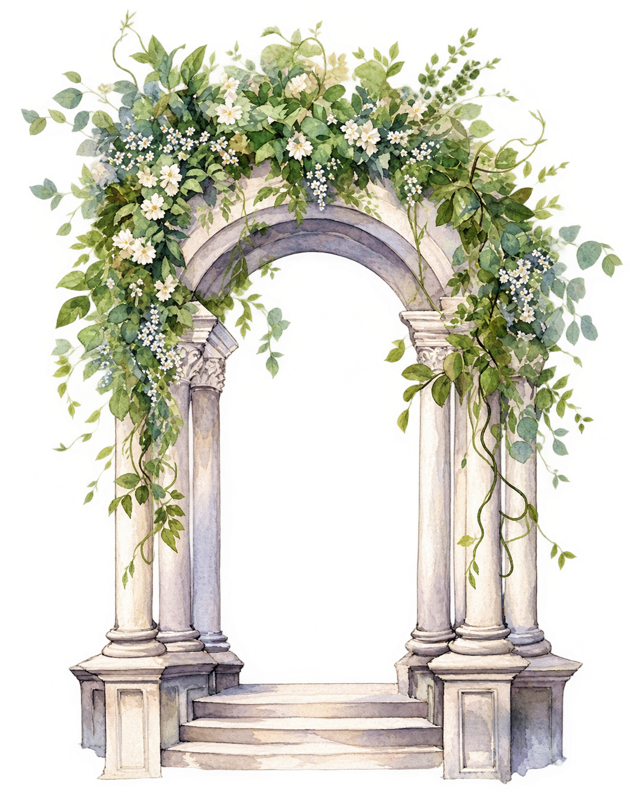
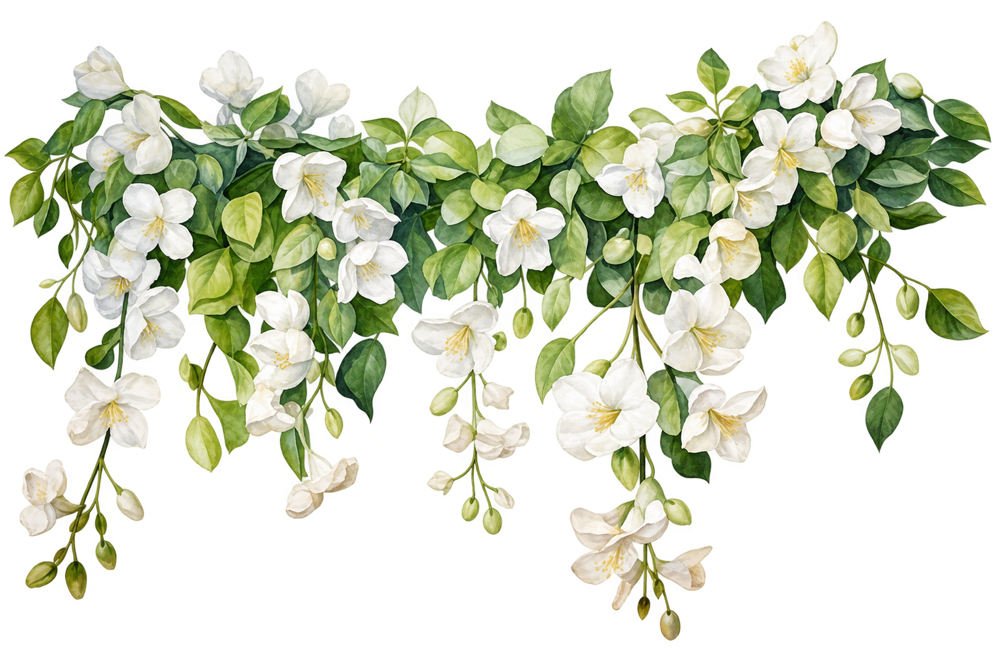
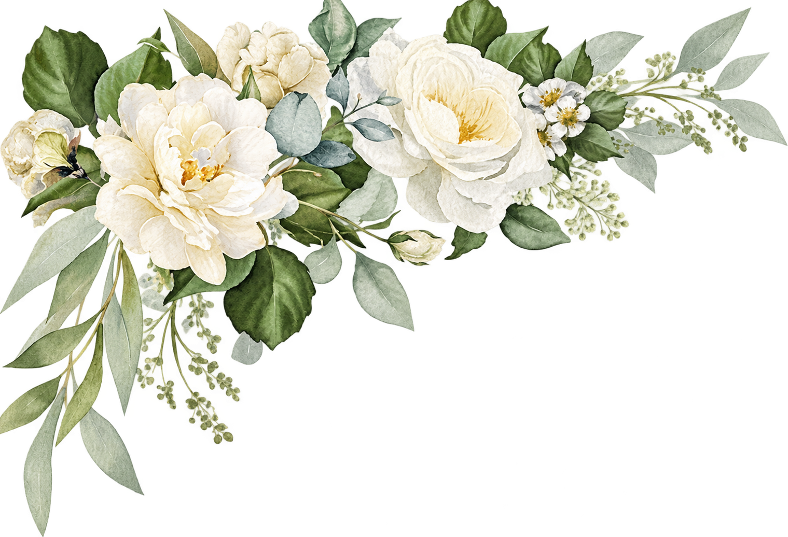

Con la bendición de Dios y de nuestras familias
Nuestra Boda
Juan Pablo & Juliana
Sábado 21 de noviembre de 2026 · Medellín
Reserva la fecha
Faltan
21 de noviembre, 2026
4:00 p. m.

Las muchas aguas no podrán apagar el amor, ni lo ahogarán los ríos.
Cantares 8:7

Para la ocasión
Código de vestimenta
Formal

Te sugerimos reservar el blanco para la novia.

El día
Itinerario
-
4:00 p. m.
Bienvenida
Recibimos a nuestros invitados en el rooftop.
-
5:00 p. m.
Ceremonia
El momento por el que estamos todos aquí.
-
6:00 p. m.
Cóctel
Brindis y fotos con el atardecer de Medellín.
-
7:30 p. m.
Cena y celebración
Mesa servida, música y baile hasta tarde.


Te esperamos
Confirmar asistencia
Agradecemos que confirmes tu asistencia antes del 30 de septiembre. De no obtener respuesta de tu parte se tomará como rechazada la asistencia.
Confirmar asistenciaSe abre WhatsApp para responderle a los novios.